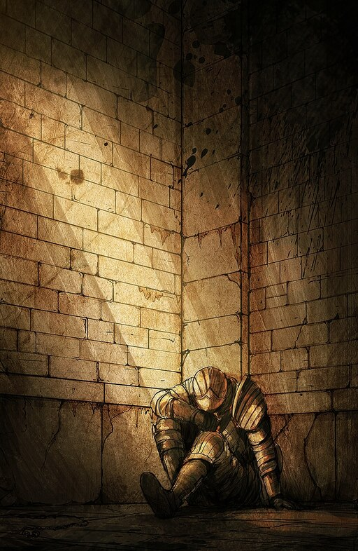

En la Era de los Antiguos, el mundo no tenía forma, estaba envuelto en niebla. Una tierra de riscos grises, Arboles gigantescos y dragones eternos.
Pero entonces hubo Fuego y con el fuego vino la disparidad. Calor y frío, vida y muerte, y por supuesto... luz y oscuridad.
Luego, de la oscuridad, Ellos vinieron y encontraron las Almas de los dioses dentro de la llama. Nito, el Primero de los Muertos, La Bruja de Izalith y sus Hijas del Caos, Gwyn, el Señor de la Luz del Sol, y sus fieles caballeros.
Y el Furtivo Pigmeo, a menudo olvidado.
Así comenzó la Era del Fuego.
Pero pronto las llamas se desvanecerán y solo quedará oscuridad. Incluso ahora solo hay brasas, y el hombre ya no ve la luz, sino solo noches interminables. Y entre los vivos pueden verse a los que sufren la maldicion de la Señal Oscura.

Sí, asi es. la Señal Oscura marca a los No-muertos. Y en esta tierra, los No-muertos son acorralados y conducidos al norte, donde están encerrados, para esperar el fin del mundo...
Este es tu destino.
Solo que, en las antiguas leyendas, se afirma que un día se elegirá a un no-muerto para que abandone el asilo de no-muertos, en peregrinación, a la tierra de los antiguos señores, Lordran.